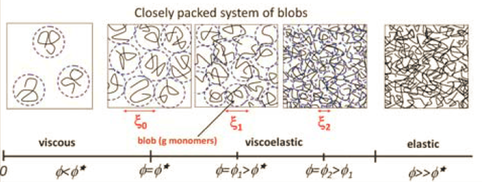
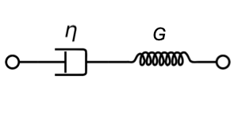
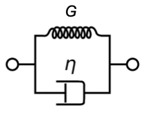

Viscoelasticity
Contents
This page was generated from notebooks/L23/Untitled.ipynb.

Viscoelasticity#
Viscoelsatic behavior is a mixture of viscous behavior, which we know already from simple liquids and elastic behavior, which is typical for solids. Yet, this mixture is not just a simple superposition but often quite complex and depdning on the way mechanical deformation is introduced.
insert sketch*
As already previously introduced, we can define a shear stress
as the tangential force \(F\) to an area \(A\). As a response to such a stress, the material deforms
Maxwell Model#
A model for a viscoelastic liquid is the Maxwell model being a serial combination of a spring and a dashpot (viscous element).
Kelvin-Voigt#
The Kelvin-Voigt model is a parallel combination of both elements and can grasp some features of a viscoelastic solid. It can however not describe the behavior for step strain.
Standard Model#
A better model for visoelastic solids is the standard linear solid model comprising three mechanical elements.